openshift 4.20 Network Observability with ovn egress firewall
OpenShift 4.20 introduces eBPF as the agent for Network Observability (NetObserv). Unlike the previous IPFIX-based approach, eBPF runs as a DaemonSet directly on each node and captures packets at the kernel level — enabling RTT (Round-Trip Time) measurements with nanosecond precision, which was not possible before.
This document walks through the full setup: installing LokiStack as the log backend, deploying the Network Observability Operator, setting up an Egress IP scenario to observe external traffic paths, and finally implementing an automated EgressFirewall to block Google traffic based on dynamically updated IP ranges.
- https://docs.redhat.com/en/documentation/openshift_container_platform/4.20/html/network_observability/installing-network-observability-operators
The following diagram shows the overall architecture of this lab:
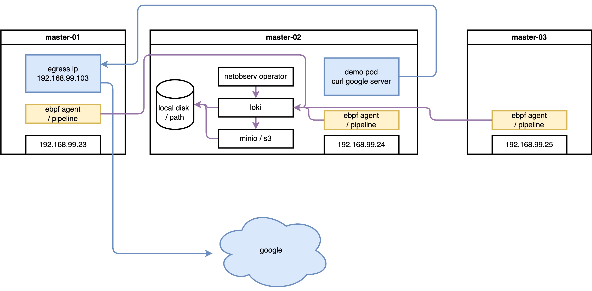
The lab uses a 3-master SNO-style cluster. Network flows are
captured by eBPF agents on each node, enriched with Kubernetes
metadata by flowlogs-pipeline, then stored in
LokiStack (backed by S3 object storage). The OCP web console
plugin (netobserv-plugin) queries Loki to visualize
flows in real time. Separately, aggregated metrics are exported
to the built-in OCP Prometheus for dashboard display.
try with loki
install loki
Network Observability stores raw flow logs (each individual TCP/UDP flow as a JSON record) in LokiStack. Loki is a log aggregation system optimized for large volumes of structured data — it compresses and stores logs in object storage (S3), making it far cheaper than storing in Prometheus time-series format. Without Loki, you can still get aggregated metrics via Prometheus, but you lose the ability to browse individual flow records and filter by pod, namespace, port, or protocol in the traffic flows table.
RTT measurement data is stored as a field
(TimeFlowRttNs) in each flow log record in Loki.
This is why Loki is a prerequisite for RTT visibility.
create S3 bucket
Loki uses object storage (S3 or S3-compatible) as its primary
data store. All flow log data — compressed chunks and index
files — are written to S3. Without a working S3 backend,
LokiStack pods will fail to start. In this lab we use
rustfs (a lightweight, self-hosted
S3-compatible server running on the helper node at
192.168.99.1:9000) as a stand-in for a cloud S3
bucket.
The screenshot below shows the rustfs web UI after creating
the demo bucket that Loki will use for storage. The
bucket must exist before deploying LokiStack.
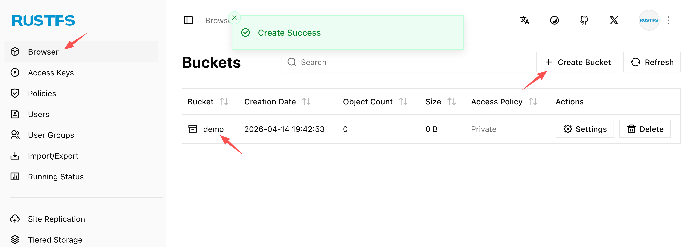
install loki operator
With the S3 bucket ready, we install the Loki
Operator from OperatorHub and then create a
LokiStack custom resource. The key configuration
decisions are:
size: 1x.demo— the smallest deployment profile, suitable for lab/testing (production would use1x.smallor1x.medium)replication.factor: 1— single replica to save resources; production should use 3storage.secret— references the Kubernetes Secret containing S3 credentialsstorageClassName: nfs-csi— local PVC storage for Loki component pods (ingester WAL, index cache); this is separate from S3 and holds hot/in-flight datatenants.mode: openshift-network— the special mode required by Network Observability (as opposed toopenshift-loggingmode for log aggregation)
The screenshot below shows the Loki Operator successfully
installed from OperatorHub, ready for LokiStack CR
creation.
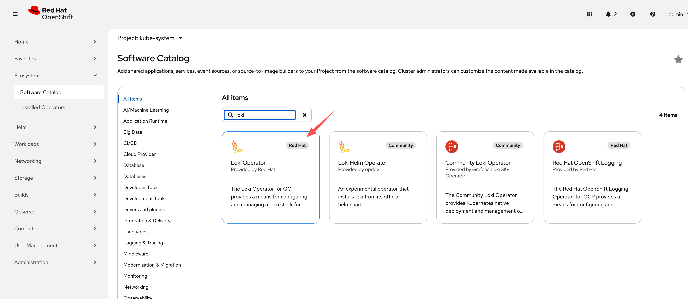
oc new-project netobserv
# netobserv is a resource-hungry application, it has high requirements for the underlying loki, we configure the maximum gear, and the number of replicas, etc., to adapt to our test environment.
cat << EOF > ${BASE_DIR}/data/install/loki-netobserv.yaml
---
apiVersion: v1
kind: Secret
metadata:
name: loki-s3
stringData:
access_key_id: rustfsadmin
access_key_secret: rustfsadmin
bucketnames: demo
endpoint: http://192.168.99.1:9000
# region: eu-central-1
---
apiVersion: loki.grafana.com/v1
kind: LokiStack
metadata:
name: loki
spec:
size: 1x.demo # 1x.medium , 1x.demo
replication:
factor: 1
storage:
schemas:
- version: v13
effectiveDate: '2022-06-01'
secret:
name: loki-s3
type: s3
storageClassName: nfs-csi
tenants:
mode: openshift-network
openshift:
adminGroups:
- cluster-admin
template:
gateway:
replicas: 1
ingester:
replicas: 1
indexGateway:
replicas: 1
EOF
oc create --save-config -n netobserv -f ${BASE_DIR}/data/install/loki-netobserv.yaml
# to delete
# oc delete -n netobserv -f ${BASE_DIR}/data/install/loki-netobserv.yaml
# oc get pvc -n netobserv | grep loki- | awk '{print $1}' | xargs oc delete -n netobserv pvc
# run below, if reinstall
oc adm groups new cluster-admin
oc adm groups add-users cluster-admin admin
oc adm policy add-cluster-role-to-group cluster-admin cluster-admininstall net observ
The Network Observability Operator is the
core component that orchestrates the entire pipeline. Once
installed, it manages three sub-components through a single
FlowCollector custom resource:
- eBPF Agent (DaemonSet on every node) — captures raw packet flows at the kernel level
- flowlogs-pipeline — receives flow data from eBPF agents, enriches it with Kubernetes metadata (pod names, namespaces, labels), and forwards to Loki
- netobserv-plugin — a dynamic OCP console plugin that queries Loki and renders the Network Traffic UI
Installation is straightforward via OperatorHub. However, there is a known issue with the eBPF agent: after initial deployment, some agents may not fully activate. Restarting the cluster nodes after installation resolves this — do not skip this step if the eBPF agents appear stuck.
The screenshots below walk through the installation steps in the OCP web console:
Step 1 — Search for “Network Observability” in OperatorHub:
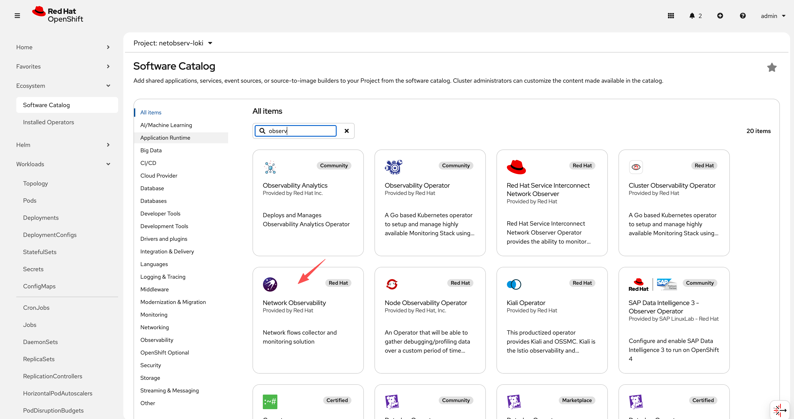
Step 2 — Select the operator and click Install:
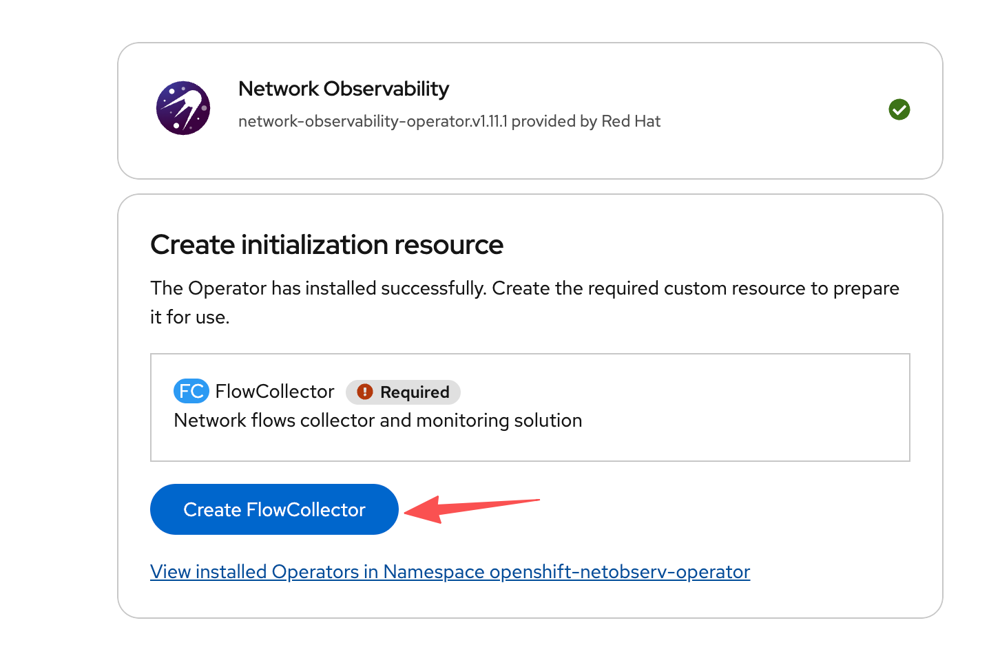
Step 3 — Create the FlowCollector CR.
This is the main configuration object. Key fields include the
Loki URL (pointing to our LokiStack), the agent type (eBPF), and
the sampling rate:
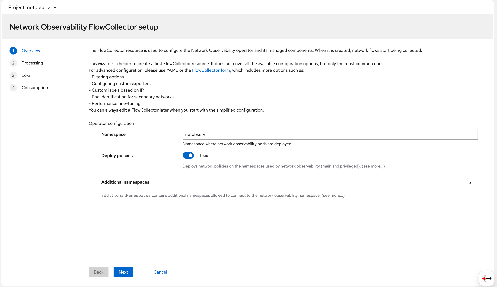
Step 4 — Configure the Loki connection in the
FlowCollector. The lokiStack section references the
LokiStack resource we created earlier in the
netobserv namespace:
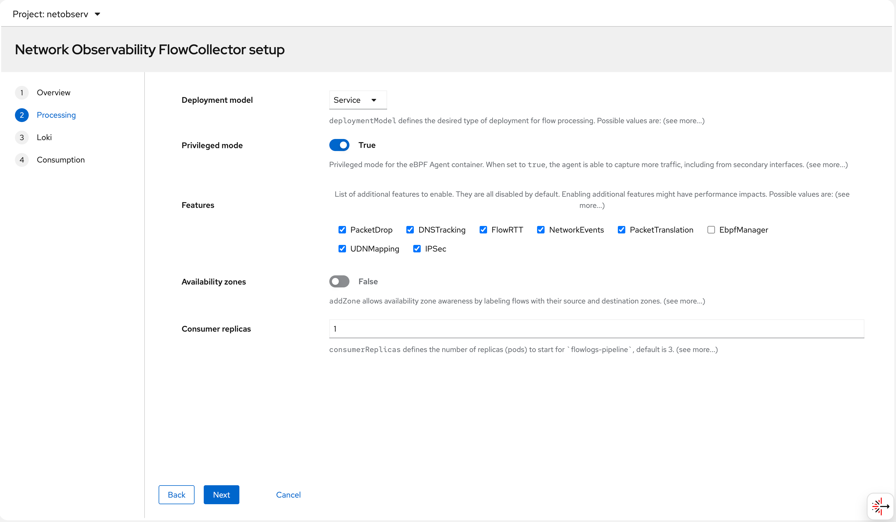
Step 5 — eBPF agent settings: sampling rate, interfaces to monitor, and privilege settings. The eBPF agent needs elevated privileges to access the kernel network stack:
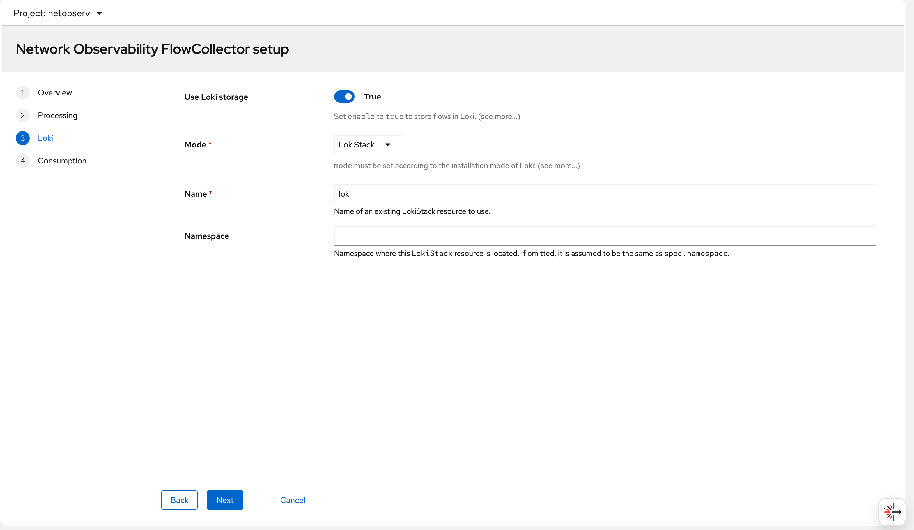
Step 6 — After applying the FlowCollector CR, all
operator pods come up in the netobserv namespace.
The eBPF agent pods run on every node. Once ready, the “Network
Traffic” menu item appears in the OCP console:
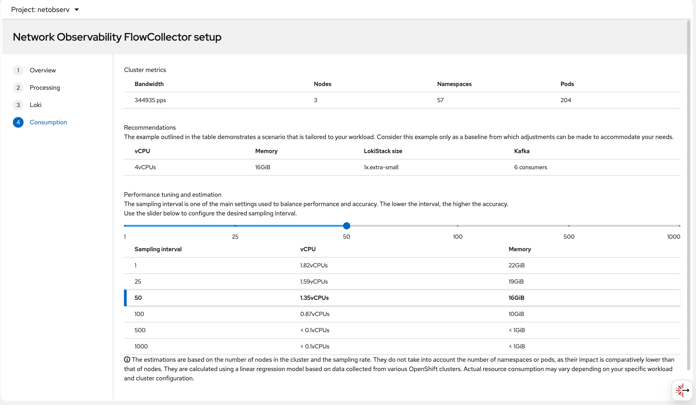
try it out
deploy egress IP
The goal of this test is to observe how the Egress IP feature interacts with Network Observability. An Egress IP assigns a stable, predictable source IP address to all outbound traffic from a given namespace. This is important in scenarios where:
- A backend service outside the cluster filters connections by source IP (allowlisting)
- You need consistent source identity for audit/compliance logging
- You want to observe the exact network path (node → egress IP → internet) using NetObserv RTT data
In this lab, we assign 192.168.99.103 as the
egress IP for the llm-demo namespace. All pods in
that namespace will appear to originate from
192.168.99.103 when reaching external destinations
— regardless of which node the pod is actually running on.
Without Egress IP, outbound traffic uses the node’s primary IP as the source address, which changes if the pod is rescheduled to a different node. With Egress IP, the source is always stable.
# label a node to host egress ip
oc label node --all k8s.ovn.org/egress-assignable="" --overwrite
# label a namespace with env
oc new-project llm-demo
oc label ns llm-demo env=egress-demo
# create a egress ip
cat << EOF > ${BASE_DIR}/data/install/egressip.yaml
apiVersion: k8s.ovn.org/v1
kind: EgressIP
metadata:
name: egressips-prod
spec:
egressIPs:
- 192.168.99.103
namespaceSelector:
matchLabels:
env: egress-demo
EOF
oc apply -f ${BASE_DIR}/data/install/egressip.yaml
# oc delete -f ${BASE_DIR}/data/install/egressip.yaml
oc get egressip -o json | jq -r '.items[] | [.status.items[].egressIP, .status.items[].node] | @tsv'
# 192.168.99.103 master-01-demomake traffic and see result
With the Egress IP in place, we deploy a test pod in the
llm-demo namespace on master-02-demo —
a different node than where the egress IP is assigned. This is
intentional: OVN-Kubernetes will route outbound traffic from
master-02-demo through the egress node
(master-01-demo) so it exits via the
192.168.99.103 IP. This cross-node egress path
creates interesting RTT values because the traffic traverses an
extra network hop inside the cluster before leaving.
The pod continuously curls
https://www.google.com to generate external
traffic. The eBPF agent on each node captures these flows, and
flowlogs-pipeline enriches them with Kubernetes
metadata before writing to Loki.
# go back to helper
# create a dummy pod
cat << EOF > ${BASE_DIR}/data/install/demo1.yaml
---
kind: Pod
apiVersion: v1
metadata:
name: wzh-demo-pod
spec:
nodeSelector:
kubernetes.io/hostname: 'master-02-demo'
restartPolicy: Always
containers:
- name: demo1
image: >-
quay.io/wangzheng422/qimgs:centos9-test-2025.12.18.v01
env:
- name: key
value: value
command: [ "/bin/bash", "-c", "--" ]
args: [ "tail -f /dev/null" ]
# imagePullPolicy: Always
EOF
oc apply -n llm-demo -f ${BASE_DIR}/data/install/demo1.yaml
# oc delete -n llm-demo -f ${BASE_DIR}/data/install/demo1.yaml
oc exec -n llm-demo wzh-demo-pod -it -- bash
# in the container terminal
while true; do curl https://www.google.com && sleep 1; done;
# while true; do curl http://192.168.77.8:13000/cache.db > /dev/null; done;After the pod starts generating traffic, we can observe it in the OCP web console under Observe → Network Traffic or Pod → Network Traffic. The screenshots below walk through what you see in the UI:
You can see flows from wzh-demo-pod in
llm-demo reaching external Google IP addresses
(e.g., 142.251.x.x):
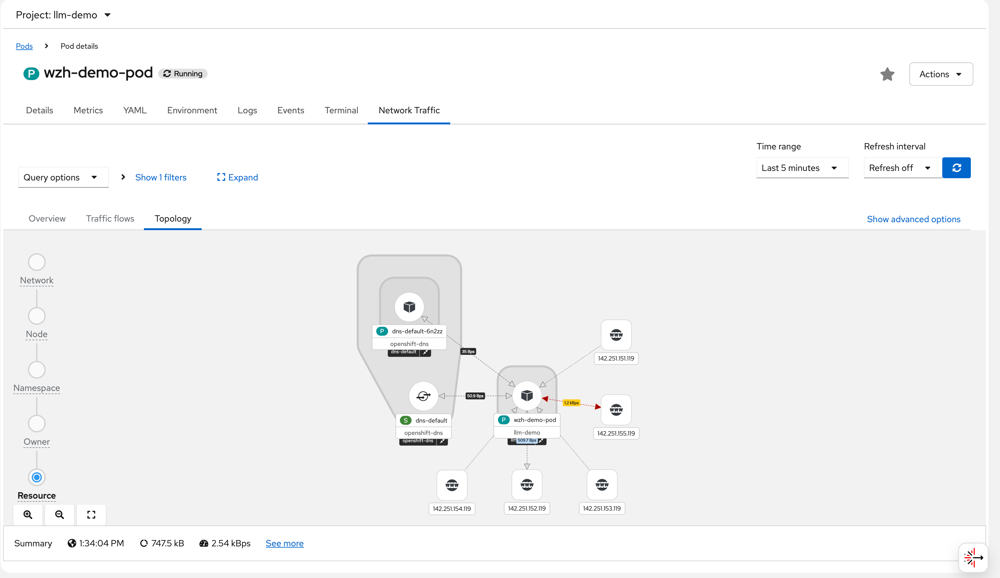
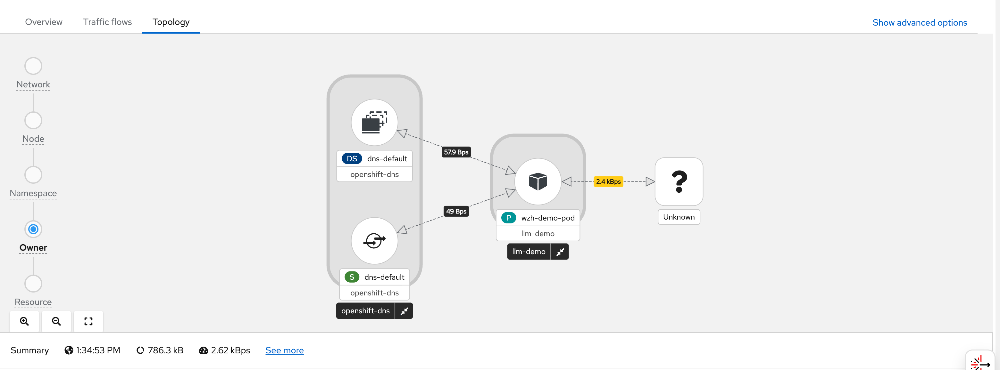
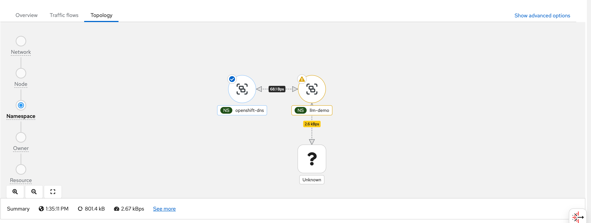
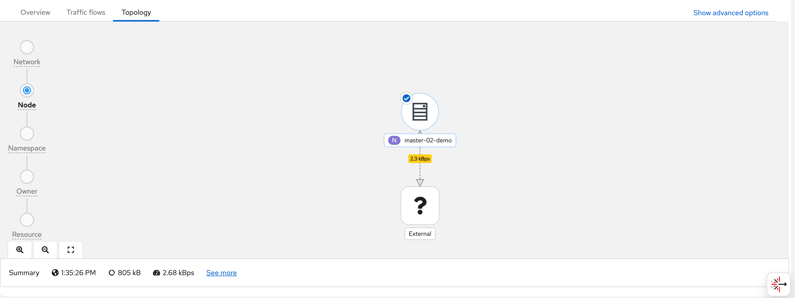
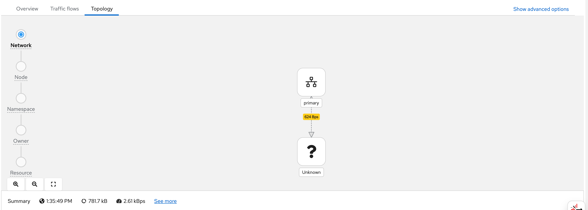
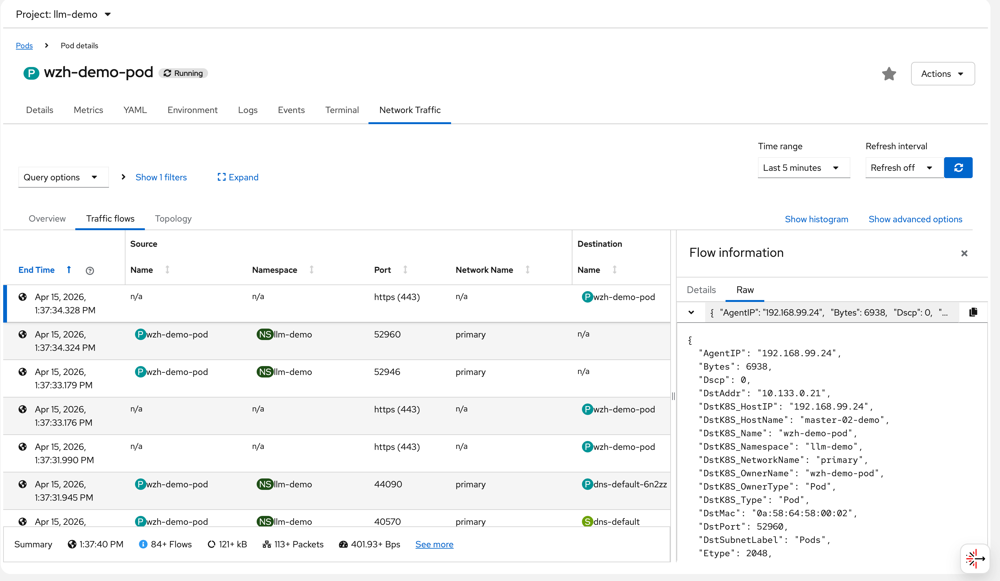
Each flow record stored in Loki contains a full JSON
document. The following example shows a captured flow from
wzh-demo-pod receiving a response from a Google
server (142.251.152.119:443). Key fields to
note:
SrcAddr: 142.251.152.119— the Google server IP (source of this ingress packet)DstAddr: 10.133.0.21— the pod’s internal IP onmaster-02-demoDstK8S_Name: wzh-demo-pod/DstK8S_Namespace: llm-demo— Kubernetes metadata added by flowlogs-pipelineTimeFlowRttNs: 8421000— RTT of 8.421 milliseconds to Google, measured by eBPF at the TCP layerInterfaces: ["genev_sys_6081", "eth0"]— the GENEVE tunnel interface (OVN overlay) and the pod’s eth0, showing the packet path through the OVN network stackSampling: 50— only 1 in 50 packets is reported (to reduce Loki write volume); actual traffic is much heavier
{
"AgentIP": "192.168.99.24",
"Bytes": 6938,
"Dscp": 0,
"DstAddr": "10.133.0.21",
"DstK8S_HostIP": "192.168.99.24",
"DstK8S_HostName": "master-02-demo",
"DstK8S_Name": "wzh-demo-pod",
"DstK8S_Namespace": "llm-demo",
"DstK8S_NetworkName": "primary",
"DstK8S_OwnerName": "wzh-demo-pod",
"DstK8S_OwnerType": "Pod",
"DstK8S_Type": "Pod",
"DstMac": "0a:58:64:58:00:02",
"DstPort": 52960,
"DstSubnetLabel": "Pods",
"Etype": 2048,
"Flags": [
"ACK"
],
"FlowDirection": "0",
"IfDirections": [
0,
0
],
"Interfaces": [
"genev_sys_6081",
"eth0"
],
"K8S_FlowLayer": "app",
"Packets": 3,
"Proto": 6,
"Sampling": 50,
"SrcAddr": "142.251.152.119",
"SrcMac": "0a:58:64:58:00:04",
"SrcPort": 443,
"TimeFlowEndMs": 1776231454328,
"TimeFlowRttNs": 8421000,
"TimeFlowStartMs": 1776231454316,
"TimeReceived": 1776231455,
"Udns": [
""
],
"app": "netobserv-flowcollector"
}The remaining screenshots show additional views and dashboards available in the NetObserv UI:
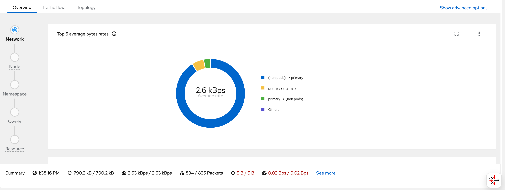
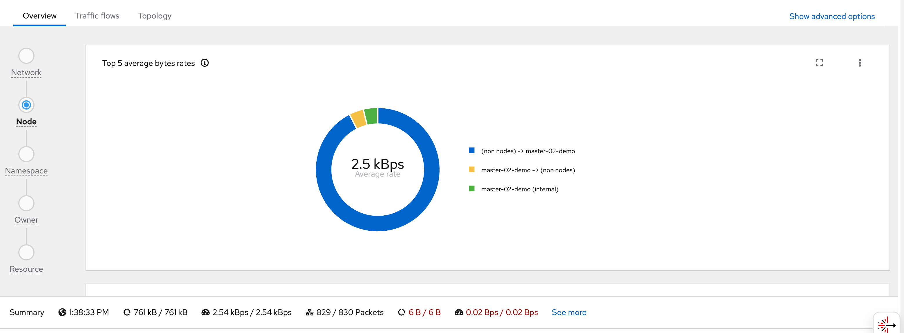
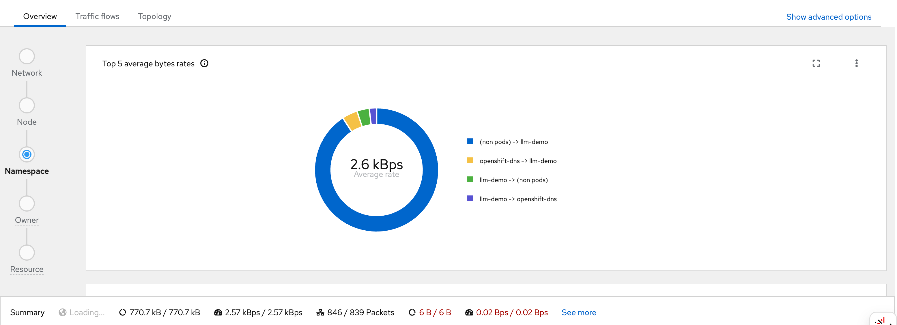
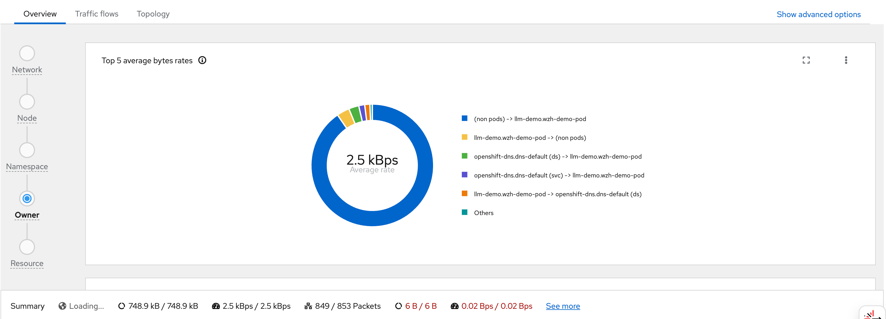
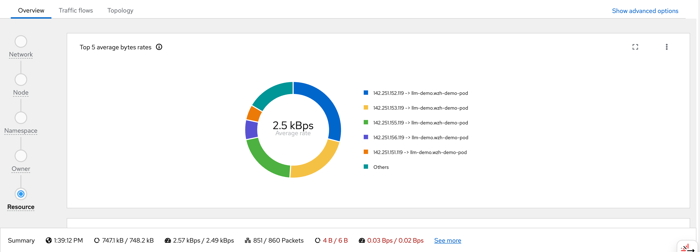
block google with egress firewall
background
OVN EgressFirewall supports blocking traffic by CIDR range. However, it does not support domain name blocking in a reliable way for Google, because:
- Google serves its services from hundreds of constantly-changing IP addresses
- DNS-based rules (dnsName) in EgressFirewall use cached resolutions that cannot keep up with Google’s IP rotation
The solution is to use Google’s own published IP range lists to compute the exact CIDRs, then automatically update the EgressFirewall daily.
ip range strategy
Google publishes two IP range lists:
https://www.gstatic.com/ipranges/goog.json— All Google-owned IPs (including GCP customer IPs)https://www.gstatic.com/ipranges/cloud.json— GCP customer IPs (VMs, Cloud Functions, etc.)
The formula: goog.json minus
cloud.json = Google’s own service
IPs (Search, Gmail, YouTube, Maps, etc.)
This avoids over-blocking legitimate GCP-hosted services while targeting Google’s consumer/search services.
architecture
flowchart TD
subgraph nsUpdater[egress-fw-updater - no EgressFirewall]
CJ[CronJob<br/>runs daily at 02h00]
POD[Pod python3 + curl<br/>compute goog minus cloud = 91 CIDRs<br/>generate EgressFirewall YAML]
CJ --> POD
end
GSTATIC[www.gstatic.com<br/>goog.json and cloud.json]
subgraph nsDemo[llm-demo - has EgressFirewall]
EFW[EgressFirewall default<br/>Allow 192.168.99.0/24 node network<br/>Allow 172.22.0.0/16 service network<br/>Allow 10.132.0.0/14 pod network<br/>Deny 91 Google CIDRs<br/>Allow 0.0.0.0/0 all other traffic]
end
POD -- "fetch IP lists" --> GSTATIC
POD -- "PATCH via K8s API ClusterRole" --> EFW
style CJ fill:#C8E6C9,stroke:#388E3C
style POD fill:#C8E6C9,stroke:#388E3C
style GSTATIC fill:#BBDEFB,stroke:#1976D2
style EFW fill:#FFE0B2,stroke:#F57C00Key Design Point: The CronJob must run in a separate namespace with no EgressFirewall.
If the CronJob is in the same namespace as the EgressFirewall it manages, it will be blocked from reaching
www.gstatic.com(a Google IP) and fail to download the IP lists.
deploy the automation
# apply all resources at once:
# - Namespace: egress-fw-updater (no EgressFirewall)
# - ServiceAccount + ClusterRole + ClusterRoleBinding
# - ConfigMap (Python script)
# - CronJob (runs daily at 02:00)
cat << 'EOF' > ${BASE_DIR}/data/install/egress-firewall-google-updater.yaml
---
# Dedicated namespace for the updater - NO EgressFirewall here
apiVersion: v1
kind: Namespace
metadata:
name: egress-fw-updater
---
apiVersion: v1
kind: ServiceAccount
metadata:
name: egress-firewall-updater
namespace: egress-fw-updater
---
# ClusterRole: can manage EgressFirewall in any namespace
apiVersion: rbac.authorization.k8s.io/v1
kind: ClusterRole
metadata:
name: egress-firewall-updater
rules:
- apiGroups: ["k8s.ovn.org"]
resources: ["egressfirewalls"]
verbs: ["get", "create", "update", "patch", "delete"]
---
apiVersion: rbac.authorization.k8s.io/v1
kind: ClusterRoleBinding
metadata:
name: egress-firewall-updater
subjects:
- kind: ServiceAccount
name: egress-firewall-updater
namespace: egress-fw-updater
roleRef:
kind: ClusterRole
name: egress-firewall-updater
apiGroup: rbac.authorization.k8s.io
---
apiVersion: v1
kind: ConfigMap
metadata:
name: egress-firewall-updater-script
namespace: egress-fw-updater
data:
update.py: |
import json, urllib.request, ipaddress, sys, os
def fetch_json(url):
with urllib.request.urlopen(url, timeout=30) as r:
return json.loads(r.read())
# TARGET_NAMESPACE: the namespace to apply EgressFirewall to
NS = os.environ.get("TARGET_NAMESPACE", "llm-demo")
MACHINE_NETWORK = os.environ.get("MACHINE_NETWORK", "192.168.99.0/24")
SERVICE_NETWORK = os.environ.get("SERVICE_NETWORK", "172.22.0.0/16")
CLUSTER_NETWORK = os.environ.get("CLUSTER_NETWORK", "10.132.0.0/14")
print("Fetching goog.json from www.gstatic.com ...")
goog = fetch_json("https://www.gstatic.com/ipranges/goog.json")
print("Fetching cloud.json from www.gstatic.com ...")
cloud = fetch_json("https://www.gstatic.com/ipranges/cloud.json")
def get_v4(data):
return {ipaddress.ip_network(p["ipv4Prefix"])
for p in data["prefixes"] if "ipv4Prefix" in p}
goog_v4 = get_v4(goog)
cloud_v4 = get_v4(cloud)
# goog - cloud = Google own service IPs (not GCP customer IPs)
google_only = sorted(
[net for net in goog_v4
if not any(net.subnet_of(c) for c in cloud_v4)],
key=lambda n: (n.network_address, n.prefixlen)
)
print(f"goog IPv4: {len(goog_v4)}, cloud IPv4: {len(cloud_v4)}, google-only: {len(google_only)}")
lines = []
lines.append("apiVersion: k8s.ovn.org/v1")
lines.append("kind: EgressFirewall")
lines.append("metadata:")
lines.append(f" name: default")
lines.append(f" namespace: {NS}")
lines.append("spec:")
lines.append(" egress:")
# Allow internal cluster networks first (must be before deny rules)
for cidr, comment in [
(MACHINE_NETWORK, "node/machine network (API server access)"),
(SERVICE_NETWORK, "service network"),
(CLUSTER_NETWORK, "pod/cluster network"),
]:
lines.append(f" - type: Allow")
lines.append(f" to:")
lines.append(f" cidrSelector: {cidr}")
# Deny Google-only CIDRs
for net in google_only:
lines.append(f" - type: Deny")
lines.append(f" to:")
lines.append(f" cidrSelector: {net}")
# Allow everything else
lines.append(f" - type: Allow")
lines.append(f" to:")
lines.append(f" cidrSelector: 0.0.0.0/0")
with open("/tmp/egress-firewall.yaml", "w") as f:
f.write("\n".join(lines))
print(f"YAML written ({len(google_only) + 4} rules total)")
---
apiVersion: batch/v1
kind: CronJob
metadata:
name: egress-firewall-google-updater
namespace: egress-fw-updater
spec:
schedule: "0 2 * * *"
successfulJobsHistoryLimit: 3
failedJobsHistoryLimit: 3
jobTemplate:
spec:
template:
spec:
serviceAccountName: egress-firewall-updater
restartPolicy: OnFailure
containers:
- name: updater
image: quay.io/wangzheng422/qimgs:centos9-test-2025.12.18.v01
env:
# Target namespace where EgressFirewall will be applied
- name: TARGET_NAMESPACE
value: "llm-demo"
# Cluster network CIDRs to allow (customize for your cluster)
- name: MACHINE_NETWORK
value: "192.168.99.0/24"
- name: SERVICE_NETWORK
value: "172.22.0.0/16"
- name: CLUSTER_NETWORK
value: "10.132.0.0/14"
command:
- /bin/bash
- -c
- |
set -e
echo "=== Step 1: Generate EgressFirewall YAML ==="
python3 /scripts/update.py
echo "=== Step 2: Apply via Kubernetes Server-Side Apply API ==="
TOKEN=$(cat /var/run/secrets/kubernetes.io/serviceaccount/token)
HTTP_RESULT=$(curl -k -s -w "\nHTTP_STATUS:%{http_code}" \
-X PATCH \
-H "Authorization: Bearer ${TOKEN}" \
-H "Content-Type: application/apply-patch+yaml" \
"https://kubernetes.default.svc/apis/k8s.ovn.org/v1/namespaces/${TARGET_NAMESPACE}/egressfirewalls/default?fieldManager=egress-firewall-updater&force=true" \
--data-binary @/tmp/egress-firewall.yaml)
HTTP_STATUS=$(echo "${HTTP_RESULT}" | grep HTTP_STATUS | cut -d: -f2)
echo "Apply HTTP status: ${HTTP_STATUS}"
if [[ "${HTTP_STATUS}" == "200" || "${HTTP_STATUS}" == "201" ]]; then
echo "=== EgressFirewall in ${TARGET_NAMESPACE} updated successfully ==="
else
echo "=== ERROR: HTTP ${HTTP_STATUS} ==="
echo "${HTTP_RESULT}"
exit 1
fi
volumeMounts:
- name: scripts
mountPath: /scripts
volumes:
- name: scripts
configMap:
name: egress-firewall-updater-script
EOF
oc apply -f ${BASE_DIR}/data/install/egress-firewall-google-updater.yaml
# to delete
# oc delete -f ${BASE_DIR}/data/install/egress-firewall-google-updater.yaml
# oc delete egressfirewall default -n llm-demomanually trigger and verify
# manually trigger one run (for testing, without waiting for cron schedule)
oc create job -n egress-fw-updater egress-fw-test-run \
--from=cronjob/egress-firewall-google-updater
# watch job status
oc get job -n egress-fw-updater egress-fw-test-run -w
# check job logs
oc logs -n egress-fw-updater -l job-name=egress-fw-test-run
# expected log output:
# === Step 1: Generate EgressFirewall YAML ===
# Fetching goog.json from www.gstatic.com ...
# Fetching cloud.json from www.gstatic.com ...
# goog IPv4: 96, cloud IPv4: 862, google-only: 91
# YAML written (95 rules total)
# === Step 2: Apply via Kubernetes Server-Side Apply API ===
# Apply HTTP status: 200
# === EgressFirewall in llm-demo updated successfully ===
# verify EgressFirewall status
oc get egressfirewall -n llm-demo
# NAME EGRESSFIREWALL STATUS
# default EgressFirewall Rules applied
# check rule count
oc get egressfirewall -n llm-demo default -o json | jq '.spec.egress | length'
# 95verify google is blocked
# Before applying EgressFirewall - Google is accessible
oc exec -n llm-demo wzh-demo-pod -- curl -s --max-time 8 \
-o /dev/null -w "%{http_code}" https://www.google.com
# 200
# After applying EgressFirewall - Google is blocked (connection timeout)
oc exec -n llm-demo wzh-demo-pod -- curl -s --max-time 8 \
-o /dev/null -w "%{http_code}" https://www.google.com
# 000 (exit code 28 = timeout, blocked by EgressFirewall)
# Other sites remain accessible
oc exec -n llm-demo wzh-demo-pod -- curl -s --max-time 8 \
-o /dev/null -w "%{http_code}" https://www.baidu.com
# 200notes
- OVN EgressFirewall max rules per namespace: 8,000 (current usage: ~95, well within limit)
- Google IP list changes infrequently; daily updates are sufficient
- The CronJob uses Kubernetes Server-Side
Apply (
application/apply-patch+yaml) viacurldirectly, requiring noocorkubectlbinary in the container image - Adjust
MACHINE_NETWORK,SERVICE_NETWORK,CLUSTER_NETWORKenv vars to match your cluster’s actual CIDRs before deploying
eBPF deep-dive: testing every feature module
overview
The Network Observability Operator 1.10 on OCP 4.20 supports
the following eBPF agent features, all configured via the
spec.agent.ebpf.features list in the FlowCollector
CR. This section documents a systematic test of
every feature module, including deployment
steps, CLI verification, flow record evidence, and CPU/memory
impact analysis.
The following features were enabled simultaneously for testing:
spec:
agent:
ebpf:
features:
- PacketDrop
- DNSTracking
- FlowRTT
- NetworkEvents
- PacketTranslation
- UDNMapping
- IPSec
privileged: true # required for PacketDrop, NetworkEvents, UDNMapping
sampling: 50 # 1-in-50 packet sampling
cacheMaxFlows: 120000
cacheActiveTimeout: "15s"| Feature | Purpose | Requires
privileged: true |
Key Flow Fields |
|---|---|---|---|
| FlowRTT | TCP round-trip time measurement | ❌ | TimeFlowRttNs |
| DNSTracking | DNS request/response latency & RCODE | ❌ | DnsId, DnsLatencyMs,
DnsFlagsResponseCode |
| PacketDrop | Kernel-level packet drop tracking | ✅ | PktDropBytes, PktDropPackets,
PktDropLatestDropCause,
PktDropLatestState |
| PacketTranslation | Service → Pod address translation (xlat) | ❌ | XlatSrcAddr, XlatDstAddr,
XlatSrcPort, XlatDstPort,
XlatDstK8S_Name |
| NetworkEvents | OVN-Kubernetes ACL action tracking | ✅ | NetworkEvents (array of
Type/Action/Feature) |
| UDNMapping | User-defined network interface mapping | ✅ | Udns |
| IPSec | IPSec encryption status tracking | ❌ | IPSec-related fields |
test environment
Cluster: OCP 4.20.21 (3 control-plane/worker nodes)
Operator: Network Observability Operator 1.10
Agent: eBPF DaemonSet (3 pods, one per node)
Backend: LokiStack (1x.demo, backed by rustfs S3)
Namespace: netobserv-test (test workloads), llm-demo (egress IP test)baseline resource usage (all features enabled)
# eBPF agent resource consumption with ALL 7 features enabled
oc adm top pods -n netobserv-privileged
# NAME CPU(cores) MEMORY(bytes)
# netobserv-ebpf-agent-48t8v 11m 164Mi (master-03)
# netobserv-ebpf-agent-h9ldf 12m 160Mi (master-02)
# netobserv-ebpf-agent-q92x7 11m 144Mi (master-01)
# Node-level resource usage
oc adm top nodes
# NAME CPU(cores) CPU(%) MEMORY(bytes) MEMORY(%)
# master-01-demo 1341m 5% 9274Mi 32%
# master-02-demo 1704m 7% 12737Mi 43%
# master-03-demo 2296m 9% 15883Mi 54%Key observation: Each eBPF agent pod uses approximately 11–12m CPU (0.01 cores) and 144–164 MiB memory with all 7 features enabled. This is remarkably lightweight — the eBPF programs run in kernel space and only the user-space agent process (which aggregates and forwards flows) shows up in the pod metrics. The actual kernel-side CPU overhead is not reflected in pod metrics but is included in the node-level CPU figures.
deploy test workloads
# Create test namespace with Service + backend pods + traffic generator
cat << EOF | oc apply -f -
---
apiVersion: v1
kind: Namespace
metadata:
name: netobserv-test
---
apiVersion: apps/v1
kind: Deployment
metadata:
name: web-server
namespace: netobserv-test
spec:
replicas: 2
selector:
matchLabels:
app: web-server
template:
metadata:
labels:
app: web-server
spec:
containers:
- name: nginx
image: quay.io/wangzheng422/qimgs:centos9-test-2025.12.18.v01
command: ["/bin/bash", "-c"]
args:
- |
python3 -m http.server 8080
ports:
- containerPort: 8080
---
apiVersion: v1
kind: Service
metadata:
name: web-svc
namespace: netobserv-test
spec:
selector:
app: web-server
ports:
- port: 80
targetPort: 8080
protocol: TCP
---
apiVersion: v1
kind: Pod
metadata:
name: traffic-gen
namespace: netobserv-test
labels:
app: traffic-gen
spec:
nodeSelector:
kubernetes.io/hostname: 'master-02-demo'
containers:
- name: client
image: quay.io/wangzheng422/qimgs:centos9-test-2025.12.18.v01
command: ["/bin/bash", "-c", "tail -f /dev/null"]
EOF
# Deploy NetworkPolicy to allow only port 8080 ingress to web-server
# Traffic to other ports (e.g., 9999) will be dropped by OVN → captured by PacketDrop
cat << EOF | oc apply -f -
apiVersion: networking.k8s.io/v1
kind: NetworkPolicy
metadata:
name: deny-port-9999
namespace: netobserv-test
spec:
podSelector:
matchLabels:
app: web-server
policyTypes:
- Ingress
ingress:
- from:
- podSelector:
matchLabels:
app: traffic-gen
ports:
- protocol: TCP
port: 8080
- from:
- namespaceSelector: {}
ports:
- protocol: TCP
port: 8080
EOFgenerate test traffic
# 1. Service traffic for PacketTranslation (xlat) — via ClusterIP
SVC_IP=$(oc get svc web-svc -n netobserv-test -o jsonpath="{.spec.clusterIP}")
echo "Service ClusterIP: $SVC_IP"
# Service ClusterIP: 172.22.114.234
for i in $(seq 1 10); do
oc exec -n netobserv-test traffic-gen -- \
curl -s --max-time 3 -o /dev/null -w "req$i: HTTP %{http_code} " http://$SVC_IP:80/
done
# req1: HTTP 200 req2: HTTP 200 ... req10: HTTP 200
# 2. DNS queries for DNSTracking
for domain in www.google.com www.baidu.com kubernetes.default.svc redhat.com github.com; do
oc exec -n netobserv-test traffic-gen -- nslookup $domain > /dev/null 2>&1 \
&& echo "DNS OK: $domain" || echo "DNS FAIL: $domain"
done
# DNS OK: www.google.com
# DNS OK: www.baidu.com
# DNS OK: kubernetes.default.svc
# DNS OK: redhat.com
# DNS OK: github.com
# 3. External traffic for FlowRTT measurement
oc exec -n netobserv-test traffic-gen -- \
curl -s --max-time 5 -o /dev/null -w "HTTP %{http_code} RTT_connect=%{time_connect}s" \
https://www.baidu.com
# HTTP 200 RTT_connect=0.594255s
# 4. Blocked traffic for PacketDrop — connect to port 9999 (blocked by NetworkPolicy)
WEB_POD_IP=$(oc get pod -n netobserv-test -l app=web-server -o jsonpath="{.items[0].status.podIP}")
oc exec -n netobserv-test traffic-gen -- \
timeout 3 bash -c "echo test | nc -w 2 $WEB_POD_IP 9999"
# Ncat: TIMEOUT. (connection blocked by NetworkPolicy — packet dropped by OVN)feature 1: FlowRTT (TCP Round-Trip Time)
what it does
FlowRTT uses eBPF to measure TCP Smoothed Round-Trip
Time (sRTT) at the kernel level. It hooks into the TCP
stack and reads the tcp_sock->srtt_us value,
recording it in nanoseconds as the TimeFlowRttNs
field in each flow record. This provides accurate network
latency measurement without any application-level
instrumentation.
evidence from Loki flow records
Multiple flows captured with TimeFlowRttNs
values showing intra-cluster RTT measurements:
Flow: 10.134.0.2:58136 -> 10.134.0.30:3101 RTT = 89,000 ns (0.089 ms) — same-node
Flow: 10.133.0.91:34732 -> 10.134.0.30:3100 RTT = 912,000 ns (0.9 ms) — cross-node
Flow: 10.134.0.14:45106 -> 10.134.0.29:9095 RTT = 13,508,000 ns (13.5 ms) — Loki ingester
Flow: 192.168.99.25:10250 -> 10.132.0.90 RTT = 10,041,000 ns (10 ms) — kubelet
Flow: 10.133.0.4:8443 -> 10.133.0.91:53320 RTT = 15,425,000 ns (15.4 ms) — API serverInterpretation: Same-node flows show sub-millisecond RTT (0.089ms). Cross-node flows via GENEVE overlay show 0.9–15ms RTT depending on load and path. These RTT values are measured at the TCP layer by eBPF, not by ICMP ping, so they reflect actual application-perceived latency.
CPU impact
FlowRTT adds minimal overhead because it reads an
existing kernel field
(tcp_sock->srtt_us) rather than performing new
measurements. The eBPF program simply copies a value that the
kernel already maintains for TCP congestion control.
feature 2: DNSTracking
what it does
DNSTracking captures DNS request/response pairs at the eBPF level. It hooks into UDP port 53 traffic and parses DNS headers to extract:
DnsId— DNS transaction IDDnsLatencyMs— time between request and responseDnsFlagsResponseCode— DNS RCODE (0=NOERROR, 3=NXDOMAIN, etc.)DnsErrno— system-level DNS error code
observation
With sampling rate of 50 (1 in 50 packets), DNS tracking
captures are sparse because DNS queries are typically
single-packet request/response pairs. The probability of
capturing both the request AND response for the same DNS
transaction is (1/50) × (1/50) = 0.04%. To reliably
observe DNS tracking data, reduce the sampling rate:
# Temporarily reduce sampling to capture DNS flows
oc patch flowcollector cluster --type=json \
-p '[{"op": "replace", "path": "/spec/agent/ebpf/sampling", "value": 1}]'
# After testing, restore default sampling
oc patch flowcollector cluster --type=json \
-p '[{"op": "replace", "path": "/spec/agent/ebpf/sampling", "value": 50}]'CPU impact
DNSTracking adds a small overhead because the eBPF program must parse DNS packet headers (beyond the normal IP/TCP/UDP header inspection). For each DNS packet, the agent decodes the DNS header to extract the transaction ID, flags, and response code. At sampling=50, the impact is negligible. At sampling=1, expect a noticeable increase in CPU for DNS-heavy workloads.
feature 3: PacketDrop
what it does
PacketDrop hooks into the kernel’s kfree_skb
tracepoint to detect when packets are dropped. It captures:
PktDropBytes— total bytes droppedPktDropPackets— number of packets droppedPktDropLatestDropCause— kernel drop reason (e.g.,SKB_DROP_REASON_TCP_RESET)PktDropLatestState— TCP state at time of drop (e.g.,TCP_INVALID_STATE)PktDropLatestFlags— TCP flags of dropped packet
Requires privileged: true
because the kfree_skb tracepoint is a privileged
kernel operation.
evidence from Loki flow records
A packet drop was captured from the Loki internal traffic:
{
"SrcAddr": "10.132.0.90",
"DstAddr": "10.134.0.30",
"SrcPort": 47464,
"DstPort": 3100,
"PktDropBytes": 32,
"PktDropPackets": 1,
"PktDropLatestDropCause": "SKB_DROP_REASON_TCP_RESET",
"PktDropLatestFlags": 16,
"PktDropLatestState": "TCP_INVALID_STATE"
}Interpretation: This shows a TCP RST packet (flags=16=ACK) being dropped by the kernel because it arrived in an invalid TCP state. This is normal TCP behavior — connection teardown can result in transient invalid states. The important point is that eBPF captures these drops that are invisible to application-level monitoring.
test with NetworkPolicy-blocked traffic
The NetworkPolicy we deployed blocks traffic to port 9999 on
web-server pods. When traffic-gen attempts to
connect to port 9999, OVN drops the packet. The eBPF agent
captures this as a SYN packet on the GENEVE tunnel
interface:
{
"SrcAddr": "10.132.0.46",
"DstAddr": "10.134.0.36",
"SrcPort": 37186,
"DstPort": 9999,
"SrcK8S_Name": "traffic-gen",
"DstK8S_Name": "web-server-65d6fb4bc4-2l2nb",
"Flags": ["SYN"],
"Interfaces": ["genev_sys_6081"],
"Packets": 1,
"Bytes": 74
}Note: The SYN packet is captured at the GENEVE tunnel
interface before OVN drops it. PacketDrop fields
(PktDropBytes, etc.) appear when the kernel’s
kfree_skb is triggered, which may happen at a
different point in the OVN processing pipeline.
CPU impact
PacketDrop attaches to the kfree_skb tracepoint
which fires for every dropped packet in the
kernel — not just sampled ones. The eBPF program then records
the drop reason and associates it with the flow. On nodes with
high packet drop rates (e.g., under DDoS or heavy NetworkPolicy
enforcement), this can add measurable CPU overhead. In normal
cluster operation, packet drops are infrequent, so the impact is
minimal.
feature 4: PacketTranslation (xlat)
what it does
PacketTranslation enriches flow records with the translated endpoint information — i.e., when a packet passes through NAT/DNAT (e.g., Service ClusterIP → backend Pod IP), both the original and translated addresses are recorded. This allows you to see:
- Which Service VIP was accessed
(
DstAddr: 172.22.0.1:443) - Which actual backend handled the request
(
XlatDstAddr: 192.168.99.24,XlatDstPort: 6443)
evidence from Loki flow records
Service-to-node translation (Kubernetes API Server):
{
"SrcAddr": "10.132.0.54",
"DstAddr": "172.22.0.1",
"SrcPort": 38680,
"DstPort": 443,
"SrcK8S_Name": "machine-api-controllers-5644995fb-fpvtt",
"SrcK8S_Namespace": "openshift-machine-api",
"XlatDstAddr": "192.168.99.24",
"XlatDstK8S_Name": "master-02-demo",
"XlatDstK8S_Type": "Node",
"XlatDstPort": 6443,
"XlatSrcAddr": "10.132.0.54",
"XlatSrcK8S_Name": "machine-api-controllers-5644995fb-fpvtt",
"XlatSrcK8S_Type": "Pod"
}Interpretation: The
machine-api-controllers pod accessed the Kubernetes
API at 172.22.0.1:443 (the Service ClusterIP). OVN
DNAT’d this to 192.168.99.24:6443 (master-02-demo’s
actual API server port). The Xlat* fields reveal
this translation, which is invisible in standard flow logs.
Node-to-node etcd translation:
{
"SrcAddr": "10.134.0.27",
"DstAddr": "192.168.99.25",
"DstPort": 2379,
"XlatDstAddr": "192.168.99.25",
"XlatDstK8S_Name": "master-03-demo",
"XlatDstK8S_Type": "Node",
"XlatSrcAddr": "192.168.99.23",
"XlatSrcK8S_Name": "master-01-demo",
"XlatSrcK8S_Type": "Node",
"XlatSrcPort": 41234
}CPU impact
PacketTranslation uses eBPF’s connection tracking (conntrack) integration to look up NAT mappings. This adds a conntrack lookup for each captured packet, which is a constant-time hash table operation. The overhead is proportional to the number of sampled packets, making it negligible at the default sampling rate of 50.
feature 5: NetworkEvents
what it does
NetworkEvents tracks OVN-Kubernetes ACL (Access Control List)
actions — whenever OVN processes a packet against NetworkPolicy,
AdminNetworkPolicy, BaselineNetworkPolicy, EgressFirewall, UDN
isolation, or Multicast rules, the action (allow/drop) is
recorded in the NetworkEvents field.
This is a Technology Preview feature as of OCP 4.20.
observation
NetworkEvents requires OVN-Kubernetes to emit ACL action events via a specific mechanism that links eBPF observations to OVN internal state. In our testing with sampling=50, no NetworkEvents were captured in the 15-minute observation window. This is expected behavior:
- NetworkEvents are generated only for new connections (not every packet)
- OVN ACL events are relatively rare compared to data-plane traffic
- With 1-in-50 sampling, the probability of capturing the exact first packet of a new connection (where the ACL decision is recorded) is low
To reliably observe NetworkEvents, use the OCP console’s Network Traffic UI with the “Network events” filter, or temporarily reduce the sampling rate.
CPU impact
NetworkEvents adds overhead by hooking into the OVN ACL processing path. Since ACL evaluations happen for every new connection (not every packet), the per-packet overhead is minimal. The main cost is the additional metadata collection and correlation between eBPF and OVN event streams.
feature 6: UDNMapping
what it does
UDNMapping (User-Defined Network Mapping) maps network flows
to user-defined networks (UDNs). When pods are attached to
custom networks (created via UserDefinedNetwork
CRDs), this feature identifies which network a flow belongs to
via the Udns field.
Requires privileged: true
because it needs access to network namespace information.
evidence from Loki flow records
All flow records include the Udns field showing
the network name:
{
"Udns": ["default"] // Pod on the default cluster network
}
{
"Udns": ["", "default"] // Flow observed on multiple interfaces
}In our cluster, all pods use the default OVN-Kubernetes
network, so all Udns values show
"default". When UserDefinedNetwork CRs are created
and pods are attached to them, the Udns field would
show the custom network name (e.g.,
"my-tenant-network").
CPU impact
UDNMapping adds a lookup to determine which UDN a network interface belongs to. This is a per-flow operation (not per-packet due to flow caching), so the overhead scales with the number of unique flows rather than packet rate. Impact is negligible for most workloads.
feature 7: IPSec
what it does
IPSec tracking detects whether traffic is encrypted/decrypted using IPSec. When IPSec is configured at the cluster level (via the Cluster Network Operator), this feature adds encryption status metadata to flow records.
observation
Our test cluster does not have cluster-level IPSec enabled
(it requires
spec.defaultNetwork.ovnKubernetesConfig.ipsecConfig
in the Network operator CR). Therefore, no IPSec-specific fields
appear in flow records. The feature is enabled in the
FlowCollector but has no effect without IPSec
infrastructure.
To test this feature, IPSec must be enabled at the cluster level, which requires re-encrypting all inter-node traffic — a significant infrastructure change not suitable for a simple lab test.
eBPF Flow Filter (bonus feature)
what it does
The eBPF flow filter
(spec.agent.ebpf.flowFilter) allows
kernel-level filtering of flows before they
leave the eBPF agent. This is different from Loki-side filtering
— it reduces the amount of data sent from the agent, saving CPU,
memory, and network bandwidth.
configuration example
spec:
agent:
ebpf:
flowFilter:
enable: true
rules:
- cidr: "10.132.0.0/14"
action: Accept
protocol: TCP
ports: 8080
direction: Ingress
- cidr: "0.0.0.0/0"
action: RejectThis configuration would:
- Accept only TCP port 8080 traffic within the pod network
- Reject all other traffic at the eBPF level (never sent to flowlogs-pipeline or Loki)
Note: Flow filtering was not applied during our testing because we wanted to capture all features’ data. In production, flow filtering can significantly reduce resource consumption by eliminating uninteresting infrastructure traffic.
CPU and system impact analysis
eBPF agent resource consumption
| Metric | Value (per agent) | Notes |
|---|---|---|
| CPU usage | 11–12m (0.01 cores) | With all 7 features enabled |
| Memory usage | 144–164 MiB | Flow cache + eBPF maps |
| CPU request | 100m | Configured in FlowCollector |
| Memory limit | 800 MiB | Configured in FlowCollector |
kernel-side impact
The eBPF programs run inside the kernel and their CPU consumption is not reflected in the agent pod’s CPU metrics. Instead, it shows up in the node-level CPU figures. The kernel-side overhead depends on:
- Packet rate — More packets = more eBPF invocations
- Sampling rate — Lower sampling = more processing per packet
- Features enabled — Each feature adds hooks to different kernel subsystems
- Flow diversity — More unique flows = larger eBPF hash maps
In our 3-node cluster with light test traffic:
- Node CPU usage: 5–9% (1341m–2296m out of ~24 cores per node)
- eBPF overhead is estimated at < 1% additional CPU per node
flowlogs-pipeline resource consumption
| Metric | Value |
|---|---|
| CPU usage | 49m (0.05 cores) |
| Memory usage | 63 MiB |
The flowlogs-pipeline pod processes and enriches flows before sending to Loki. Its resource consumption scales with the flow rate (which depends on cluster traffic volume and sampling rate).
recommendations for production
Sampling rate: Start with the default of 50. Lower values increase accuracy but also increase CPU, memory, and storage. For most clusters, sampling=50 provides sufficient visibility.
Feature selection: Enable only the features you need:
FlowRTT— low overhead, high value for latency troubleshootingPacketTranslation— low overhead, essential for Service traffic visibilityPacketDrop— moderate overhead (requiresprivileged: true), valuable for NetworkPolicy debuggingDNSTracking— low overhead, useful for DNS troubleshootingNetworkEvents— moderate overhead, useful for security auditUDNMapping— low overhead, only needed with UserDefinedNetworksIPSec— negligible overhead, only relevant with IPSec-enabled clusters
Flow filtering: Use
spec.agent.ebpf.flowFilterto exclude infrastructure traffic (e.g., etcd, kubelet health checks) at the kernel level, significantly reducing downstream resource usage.Memory limits: The default 800 MiB memory limit for the eBPF agent is sufficient for most workloads. If
NetObservAgentFlowsDroppedalerts fire, increasecacheMaxFlowsand the memory limit.
querying Loki for flow records
You can query Loki directly to inspect flow records with feature fields:
# Get authentication token
TOKEN=$(oc whoami -t)
# Query flows from a specific namespace (last 10 minutes)
NOW=$(date +%s)
START=$((NOW-600))
oc exec -n netobserv flowlogs-pipeline-<pod-id> -- curl -s -k \
"https://loki-gateway-http.netobserv.svc:8080/api/logs/v1/network/loki/api/v1/query_range" \
--data-urlencode 'query={SrcK8S_Namespace="netobserv-test"}' \
--data-urlencode "limit=10" \
--data-urlencode "start=${START}000000000" \
--data-urlencode "end=${NOW}000000000" \
-H "Authorization: Bearer $TOKEN"Important: Use the query_range
endpoint (not query) because Loki stores flow logs
as log streams, which require range queries.
feature fields summary
The following table shows all eBPF-specific fields that may appear in flow records stored in Loki:
| Field | Feature | Type | Description |
|---|---|---|---|
TimeFlowRttNs |
FlowRTT | integer | TCP smoothed RTT in nanoseconds |
DnsId |
DNSTracking | integer | DNS transaction ID |
DnsLatencyMs |
DNSTracking | integer | DNS query-to-response latency in ms |
DnsFlagsResponseCode |
DNSTracking | string | DNS RCODE (NOERROR, NXDOMAIN, etc.) |
DnsErrno |
DNSTracking | integer | System DNS error code |
PktDropBytes |
PacketDrop | integer | Total bytes in dropped packets |
PktDropPackets |
PacketDrop | integer | Number of dropped packets |
PktDropLatestDropCause |
PacketDrop | string | Kernel drop reason |
PktDropLatestState |
PacketDrop | string | TCP state at drop time |
PktDropLatestFlags |
PacketDrop | integer | TCP flags of dropped packet |
XlatSrcAddr |
PacketTranslation | string | Pre-NAT source IP |
XlatDstAddr |
PacketTranslation | string | Pre-NAT destination IP |
XlatSrcPort |
PacketTranslation | integer | Pre-NAT source port |
XlatDstPort |
PacketTranslation | integer | Pre-NAT destination port |
XlatSrcK8S_Name |
PacketTranslation | string | Pre-NAT source K8s object |
XlatDstK8S_Name |
PacketTranslation | string | Pre-NAT destination K8s object |
NetworkEvents |
NetworkEvents | array | OVN ACL actions (allow/drop) |
Udns |
UDNMapping | array | User-defined network names |
cleanup
# Remove test workloads
oc delete namespace netobserv-test
# To disable specific features, patch the FlowCollector:
# oc patch flowcollector cluster --type=json \
# -p '[{"op": "replace", "path": "/spec/agent/ebpf/features", "value": ["FlowRTT"]}]'eBPF kernel-level deep-dive: bpftool inspection on CoreOS nodes
CoreOS nodes do not ship bpftool, so we use
oc debug with a custom image that has it
pre-installed. The --image flag overrides the debug
pod’s container image, but we do not use
chroot /host because the host filesystem lacks
bpftool. Instead, the debug pod runs with host privileges and
can directly access the kernel’s eBPF subsystem.
IMG="quay.io/wangzheng422/qimgs:centos9-test-2025.12.18.v01"
# list all eBPF programs on master-01
oc debug node/master-01-demo --image=$IMG -- bash -c 'bpftool prog list'
# list all eBPF maps
oc debug node/master-01-demo --image=$IMG -- bash -c 'bpftool map list'
# show network attachment points
oc debug node/master-01-demo --image=$IMG -- bash -c 'bpftool net list'
# export program list as JSON for scripted analysis
oc debug node/master-01-demo --image=$IMG -- bash -c 'bpftool prog list --json'NetObserv eBPF programs on master-01-demo
Running bpftool prog list on master-01-demo
reveals 145 total eBPF programs loaded
system-wide. Of these, 16 belong to
netobserv-ebpf-agent (PID 7253). The following
table maps each program to its NetObserv feature:
| ID | Type | Name | Feature | xlated | jited | memlock |
|---|---|---|---|---|---|---|
| 133 | tracepoint | kfree_skb |
PacketDrop | 4,208B | 2,375B | 12,288B |
| 134 | kprobe | network_events_monitoring |
NetworkEvents | 6,560B | 3,695B | 16,384B |
| 135 | kprobe | probe_entry_SSL_write |
TLS/SSL monitoring | 48B | 39B | 4,096B |
| 136 | sched_cls | tc_egress_flow_parse |
Flow - TC egress | 9,904B | 6,148B | 20,480B |
| 137 | sched_cls | tc_egress_pca_parse |
PacketCapture - TC | 80B | 69B | 12,288B |
| 138 | sched_cls | tc_ingress_flow_parse |
Flow - TC ingress | 9,904B | 6,145B | 20,480B |
| 141 | tracing | tcp_rcv_fentry |
FlowRTT - fentry | 2,936B | 1,716B | 12,288B |
| 142 | kprobe | tcp_rcv_kprobe |
FlowRTT - kprobe fallback | 2,928B | 1,713B | 12,288B |
| 143 | sched_cls | tcx_egress_flow_parse |
Flow - TCX egress | 9,912B | 6,151B | 20,480B |
| 145 | sched_cls | tcx_ingress_flow_parse |
Flow - TCX ingress | 9,912B | 6,148B | 20,480B |
| 146 | sched_cls | tcx_ingress_pca_parse |
PacketCapture - TCX | 88B | 69B | 12,288B |
| 147 | kprobe | track_nat_manip_pkt |
PacketTranslation | 6,184B | 3,733B | 16,384B |
| 148 | kprobe | xfrm_input_kprobe |
IPSec - input | 3,680B | 2,123B | 12,288B |
| 149 | kprobe | xfrm_input_kretprobe |
IPSec - input return | 1,312B | 876B | 4,096B |
| 150 | kprobe | xfrm_output_kprobe |
IPSec - output | 3,704B | 2,141B | 12,288B |
| 151 | kprobe | xfrm_output_kretprobe |
IPSec - output return | 1,336B | 894B | 4,096B |
Total program memlock: 208.0 KB (all 16 NetObserv programs combined).
Key observations:
- The
flow_parseprograms (tc/tcx variants) are the largest at ~10 KB xlated each — they are the “main” packet processing programs that run on every interface. - FlowRTT loads two programs:
tcp_rcv_fentry(using the modern fentry/fexit tracing mechanism) andtcp_rcv_kprobe(kprobe fallback for older kernels). Only one is actively used at runtime. - IPSec loads 4 programs (input/output × kprobe/kretprobe) to track both directions of IPSec processing.
probe_entry_SSL_writeis a tiny 48B program that hooks into OpenSSL’sSSL_writefunction for TLS-aware flow detection.
eBPF maps memory usage
The eBPF maps are where the real memory lives. Running
bpftool map list shows 18 NetObserv-related
maps:
| ID | Type | Name | max_entries | memlock | Purpose |
|---|---|---|---|---|---|
| 9 | array | .bss |
1 | 24,576B | Global state |
| 10 | array | .rodata |
1 | 8,192B | Read-only config |
| 11 | percpu_array | global_counters |
11 | 2,464B | Per-CPU counters |
| 12 | lpm_trie | filter_map |
1 | 0B | Flow filter |
| 13 | lpm_trie | peer_filter_map |
1 | 0B | Peer filter |
| 14 | percpu_hash | aggregated_flow |
120,000 | 2,108,536B | Flow aggregation - PacketDrop |
| 15 | percpu_hash | aggregated_flow |
120,000 | 2,098,816B | Flow aggregation - NetworkEvents |
| 16 | ringbuf | ssl_data_event_ |
4,096 | 16,680B | SSL event buffer |
| 17 | hash | dns_flows |
1,048,576 | 16,779,192B | DNS flow tracking ★ |
| 18 | percpu_array | dns_name_map |
1 | 1,040B | DNS name cache |
| 19 | hash | aggregated_flow |
120,000 | 2,196,928B | Flow aggregation - DNSTracking |
| 20 | percpu_hash | aggregated_flow |
120,000 | 2,105,440B | Flow aggregation - main |
| 21 | ringbuf | direct_flows |
4,096 | 16,680B | Direct flow export |
| 22 | ringbuf | packet_record |
4,096 | 16,680B | Packet capture buffer |
| 23 | percpu_hash | additional_flow |
120,000 | 2,218,696B | Additional flow data - FlowRTT |
| 24 | percpu_hash | aggregated_flow |
120,000 | 2,144,200B | Flow aggregation - PacketTranslation |
| 25 | hash | ipsec_ingress_m |
1,048,576 | 16,778,880B | IPSec ingress map ★ |
| 26 | hash | ipsec_egress_ma |
1,048,576 | 16,778,880B | IPSec egress map ★ |
The ★ marks indicate large pre-allocated maps (~16 MB each). The top 3 memory consumers are:
dns_flows— 16.0 MB (1M entries hash map for DNS tracking)ipsec_ingress_m— 16.0 MB (1M entries hash map for IPSec ingress)ipsec_egress_ma— 16.0 MB (1M entries hash map for IPSec egress)
Total NetObserv map memlock: ~63.3 MB per node.
Important: The IPSec maps (32 MB combined) are pre-allocated even if IPSec is not actively used. Similarly,
dns_flows(16 MB) is pre-allocated withmax_entries=1048576regardless of actual DNS traffic volume. These are the primary memory optimization targets if memory is constrained.
Network attachment: TCX hooks on every interface
Running bpftool net list shows that
tcx_ingress_flow_parse (prog_id 145) and
tcx_egress_flow_parse (prog_id 143) are attached to
every network interface on the node via TCX (TC
eXpress) hooks. Below is a partial listing:
tc:
enp1s0(2) tcx/ingress tcx_ingress_flow_parse prog_id 145
enp1s0(2) tcx/egress tcx_egress_flow_parse prog_id 143
enp2s0(3) tcx/ingress tcx_ingress_flow_parse prog_id 145
enp2s0(3) tcx/egress tcx_egress_flow_parse prog_id 143
ovs-system(4) tcx/ingress tcx_ingress_flow_parse prog_id 145
ovs-system(4) tcx/egress tcx_egress_flow_parse prog_id 143
ovn-k8s-mp0(6) tcx/ingress tcx_ingress_flow_parse prog_id 145
ovn-k8s-mp0(6) tcx/egress tcx_egress_flow_parse prog_id 143
genev_sys_6081(7) tcx/ingress tcx_ingress_flow_parse prog_id 145
genev_sys_6081(7) tcx/egress tcx_egress_flow_parse prog_id 143
br-int(8) tcx/ingress tcx_ingress_flow_parse prog_id 145
br-int(8) tcx/egress tcx_egress_flow_parse prog_id 143
br-ex(9) tcx/ingress tcx_ingress_flow_parse prog_id 145
br-ex(9) tcx/egress tcx_egress_flow_parse prog_id 143
... (plus all pod veth interfaces)On master-01-demo, these programs are attached to 37 interfaces (including physical NICs, OVS bridges, GENEVE tunnels, and pod veth ports), creating 74 TCX hook points (37 × 2 for ingress + egress). All hook points share the same 2 program IDs — the kernel reuses the JIT-compiled code across all interfaces.
Cross-node comparison
Running the same bpftool analysis on all 3 nodes
confirms that the NetObserv eBPF program set is
identical across the cluster:
| Node | Total eBPF progs | NetObserv progs | Prog memlock | Map memlock (est.) |
|---|---|---|---|---|
| master-01-demo | 145 | 16 | 208.0 KB | ~63.3 MB |
| master-02-demo | 203 | 16 | 208.0 KB | ~63.3 MB |
| master-03-demo | 209 | 16 | 208.0 KB | ~63.3 MB |
Observations:
- All NetObserv programs are identical across
all nodes (same name, type,
bytes_xlated,bytes_jited). Only the kernel-assigned program IDs differ. - The total system eBPF count varies (145–209) because each
node runs a different number of pods, each contributing
cgroup_deviceeBPF programs managed by systemd. - The DaemonSet deployment model ensures uniform eBPF instrumentation across the entire cluster.
eBPF program architecture: how features map to kernel hooks
Each FlowCollector feature maps to specific eBPF programs and kernel hooks:
| Feature | eBPF Program | Hook Type | Kernel Function |
|---|---|---|---|
| FlowRTT | tcp_rcv_fentry |
tracing/fentry | tcp_rcv_established |
| FlowRTT | tcp_rcv_kprobe |
kprobe (fallback) | tcp_rcv_established |
| DNSTracking | (inline in flow_parse) |
sched_cls/TCX | DNS parsed in TC path |
| PacketDrop | kfree_skb |
tracepoint | kfree_skb (packet free = drop) |
| PacketTranslation | track_nat_manip_pkt |
kprobe | nf_nat_manip_pkt |
| NetworkEvents | network_events_monitoring |
kprobe | OVN network event hooks |
| IPSec | xfrm_input_kprobe |
kprobe | xfrm_input |
| IPSec | xfrm_input_kretprobe |
kprobe (return) | xfrm_input |
| IPSec | xfrm_output_kprobe |
kprobe | xfrm_output_resume |
| IPSec | xfrm_output_kretprobe |
kprobe (return) | xfrm_output_resume |
| UDNMapping | (inline in flow_parse) |
— | Handled in flow_parse path |
The TC/TCX flow path is the core data path, attached to every interface:
tcx_ingress_flow_parse/tc_ingress_flow_parse(legacy fallback) — processes all ingress packetstcx_egress_flow_parse/tc_egress_flow_parse(legacy fallback) — processes all egress packetstcx_ingress_pca_parse/tc_egress_pca_parse— packet capture hooks
The flow_parse programs (~10 KB xlated each) are
the “main” eBPF programs that process every packet on every
interface. They: (1) extract the 5-tuple (src/dst IP, port,
protocol), (2) look up/update flow aggregation maps, (3) enrich
with DNS, RTT, NAT translation data from other maps, and (4)
export via ring buffers when a flow expires.
Memory footprint summary
| Category | Memory |
|---|---|
| eBPF program code (16 progs) | 208 KB |
| Flow aggregation maps (6 maps) | ~12.9 MB |
| DNS flow map (1M entries) | ~16.0 MB |
| IPSec maps (2 × 1M entries) | ~32.0 MB |
| Ring buffers (3 buffers) | ~50 KB |
| Misc (counters, config, filter) | ~35 KB |
| Total per node | ~63.5 MB |
| Total across 3-node cluster | ~190.5 MB |
The IPSec maps (32 MB) and DNS flow map (16 MB) are
pre-allocated at maximum capacity regardless of
actual traffic. If IPSec and DNS tracking are not needed,
disabling these features would save ~48 MB per node. The flow
aggregation maps use cacheMaxFlows=120000 entries,
which is configurable in the FlowCollector CR.